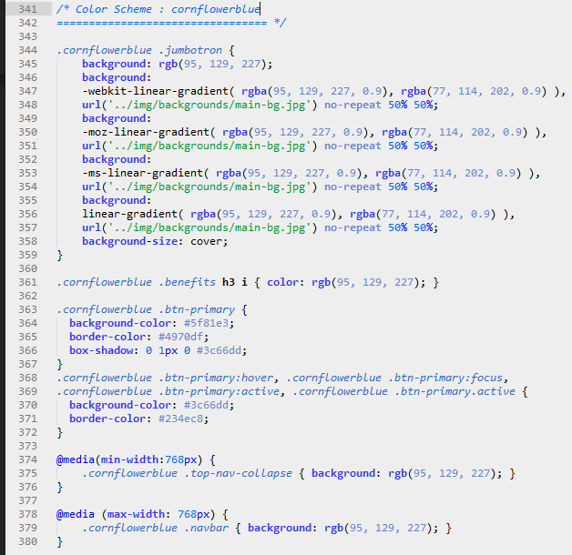

Created: 6th March, 2014
By: Joseph W.
Contact: @josepwachira
Thank you for purchasing my theme. If you have any questions that are beyond the scope of this help file, please feel free to email via my user page contact form here. Thanks so much!
This theme has a responsive layout with five main sections.
The Navbar section contains the logo area and the signin button. This section is fixed at the top of the page to highlight the branding and to prompt already invited users to signin.
The jumbotron contains an intro followed by a row of three columns suitable for how-to steps or highlighting the top features. This section has a background image with an overlay gradient which is totally editable to suit your color scheme.
The features section contains a setion header followed by two rows with two columns each suitable for displaying the features of your product/app/service.
The signup section contains a section header and a panel containing the signup form. This section rounds up as the main call to action visitors should perform on your site.
The footer lists the ways to connect and contact you as well as include information about the individual(s) behind the product/app/service.
This theme is fully responsive and utilizes a mobile first approach layout.
I'm using three CSS files in this theme. The first one is a Bootstrap file. It contains global CSS settings, fundamental HTML elements styles, and an advanced grid system. Keep in mind, that these values might be overridden somewhere else in the other CSS files.
The second file contains all of the specific custom stylings for the page. The file is separated into sections using:
/* Defaults ================================= */ some code /* Navbar ================================= */ some code /* Jumbotron ================================= */ some code /* Features ================================= */ some code /* Sign up ================================= */ some code /* Footer ================================= */ some code /* Media Queries ================================= */ some code /* Color Scheme : cornflowerblue ================================= */ some code
If you would like to edit a specific section of the site, simply find the appropriate label in the CSS file, and then scroll down until you find the appropriate style that needs to be edited.
As you can see, the last CSS section overides some values to define a new color scheme. If you would like to add a new color scheme, find the following section in the style sheet and change the colors:
I'd recommend you copy and paste this code into a new css section below the "cornflower blue" section. You can then give it your preferred name like this:
/* Color Scheme : name-of-your-color-scheme ================================= */ some code
Make sure to change the class names in your new color scheme section. Like this:
/* Color Scheme : name-of-your-color-scheme ================================= */ .cornflowerblue → .name-of-your-color-scheme
After changing the colors to your satisfaction, head over to index.html and locate this code (body tag) just below the head section
body id="home"
Now add a "name-of-your-color-scheme" class to the body tag. It should now look loke this:
body id="home" class="name-of-your-color-scheme"
After reloading the index.html, your site should reflect your new color scheme. Congrats :)
Finally, the third CSS file contains the Font Awesome (v4.0.3) styles. This file loads the icon font used in the how-to steps area of the Jumbotron as well as the features and footer sections of the landing page. This file does not require any editing.
This theme imports four main Javascript files.
I've included two psds with this theme:
The psd files are fully layered to make it easy to edit without any difficulties
I've used the following images, fonts or other files as listed.
Once again, thank you so much for purchasing this theme. As I said at the beginning, I'd be glad to help you if you have any questions relating to this theme. No guarantees, but I'll do my best to assist. If you have a more general question relating to my themes on WrapBootstrap, you might consider visiting my user page and asking your question through the contact form.
Joseph W.